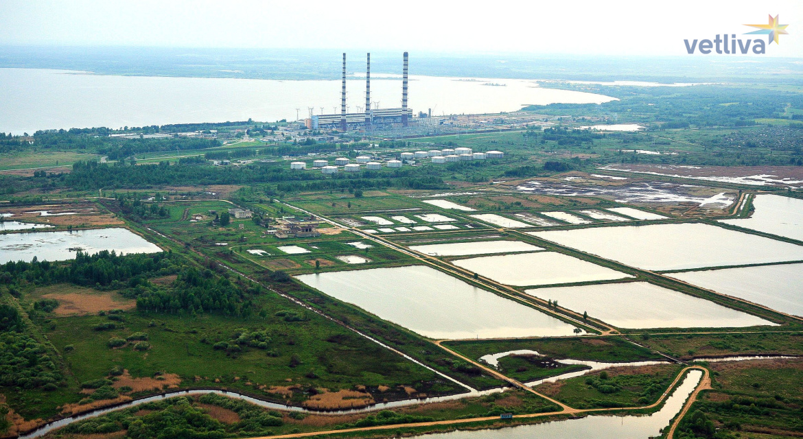
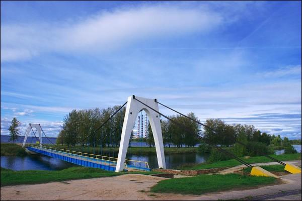
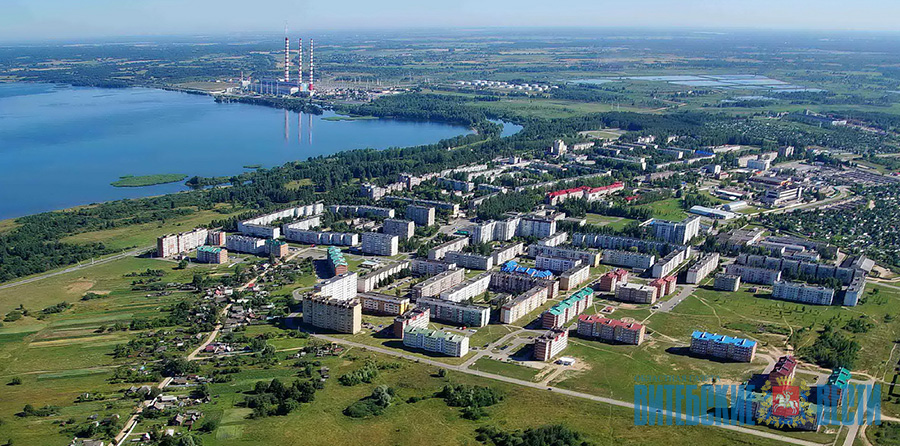

  
Новолуко́мль — город в Чашникском районе Витебской области Белоруссии. Расположен на южном берегу озера Лукомское в 23 км к югу от города Чашники. Численность населения — 12 048 человек (на 1 января 2023 года)
На главную